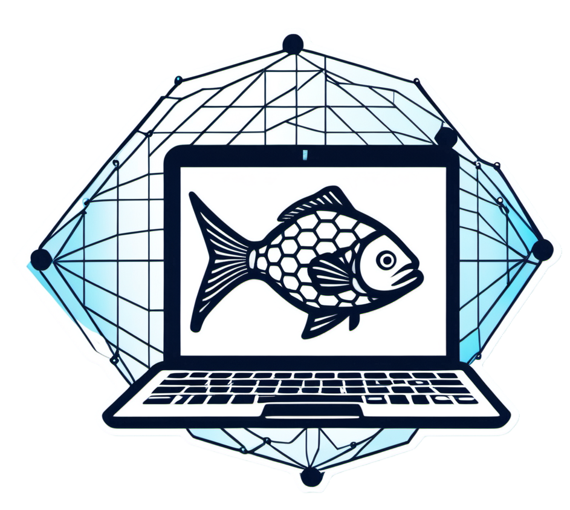
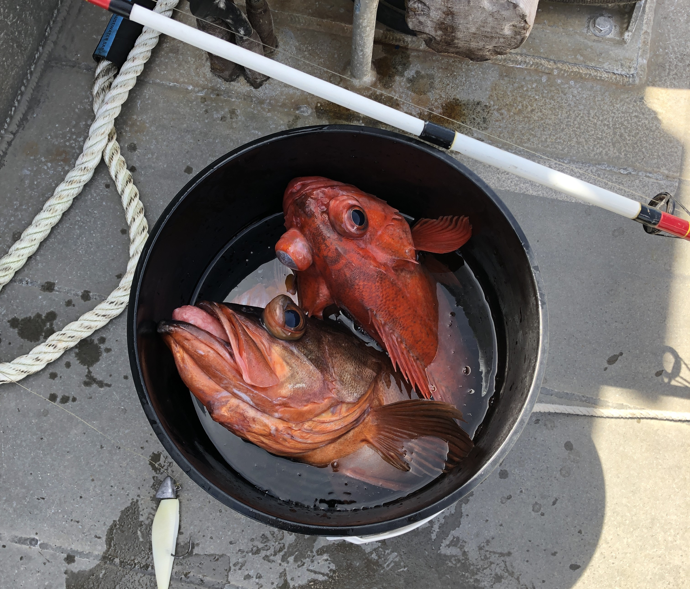
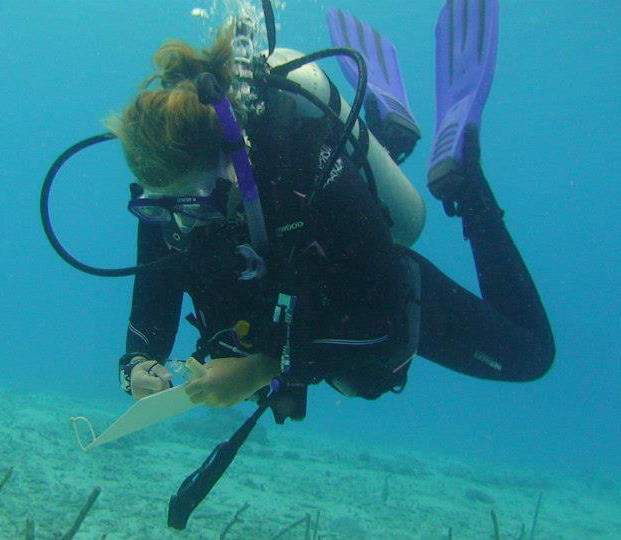
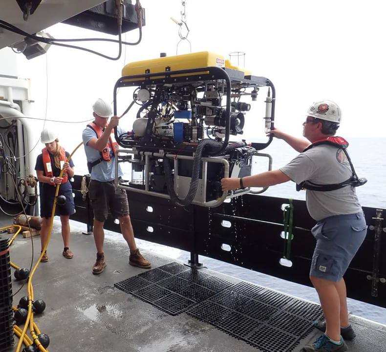
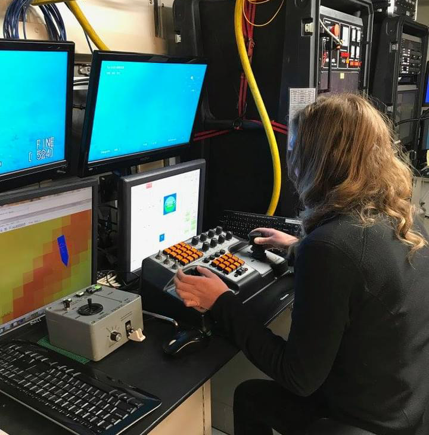
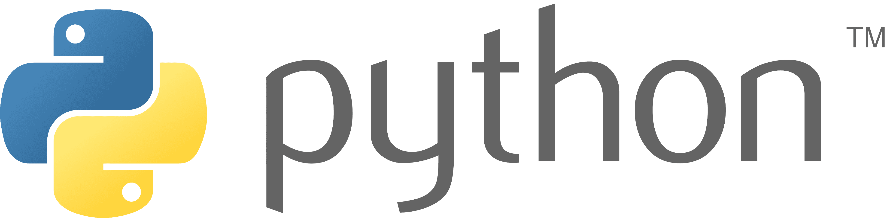
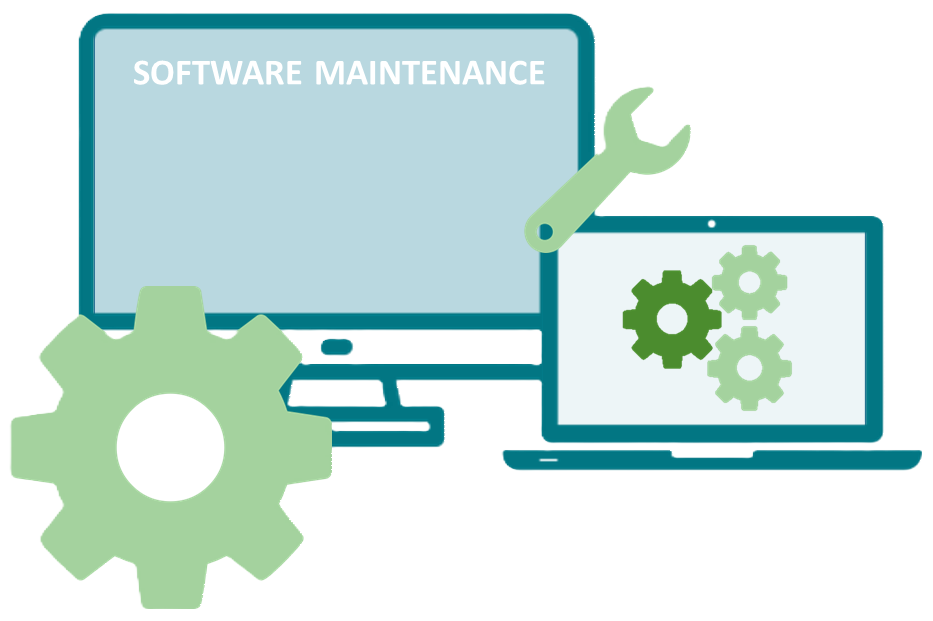
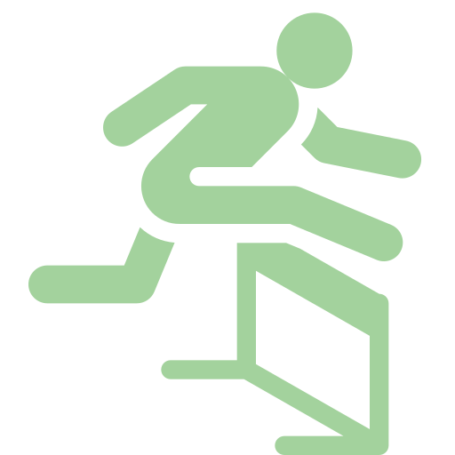
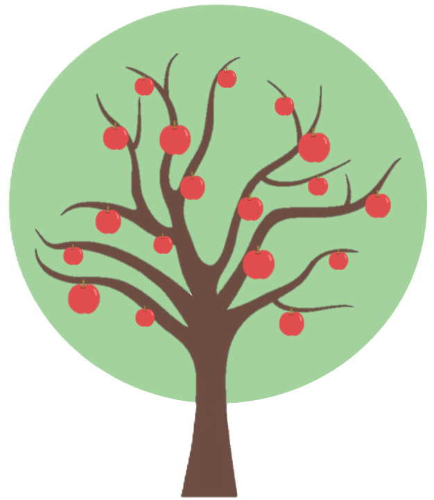
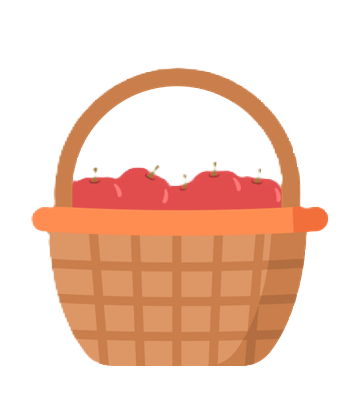

How do fisheries scientists develop software well?
Lessons learned from the ADMB shutdown
Elizabeth Perl
ECS, NOAA Fisheries
Andrea Havron
NOAA Fisheries
Ian Taylor
NOAA Fisheries

https://e-perl-noaa.github.io/ices_2024_presentation
What I was trained to do…
   
What I do now…
For the most part, we do pretty well!





However, we aren’t (truly) software developers
Scientists develop software and models fundamentally different than software developers/engineers1
We are criticized for for lacking adequate:
- Unit tests
- Documentation
- Open-source code management
- Long-term maintenance
Largely because we lack the time, money, and expertise
But, we suffer the consequences…
1 Kelly D (2015). Scientific software development viewed as knowledge acquisition: Towards understanding the development of risk-averse scientific software. J. Syst. Softw.. 109, 50-61. https://doi.org/10.1016/j.jss.2015.07.027
Example: Shutdown of ADMB
ADMB: automatic differentiation (AD) application used to build stock assessment models
- Stock Synthesis (SS3)
- Beaufort Assessment Model (BAM)
- General Model for Assessing Crustacean Stocks (GMACs)
- ADMB funding ended March 2024
- March 2024 ADMB Foundation meeting to discuss orderly shutdown:
- Final release of ADMB 13.2 March 15, 2024
- Docker image of ADMB
- No new feature development as sole developer leaves
- Bug fixes and user group support?
Downstream problems
- Building ADMB
- Build locally
- Most users do this
- Eventual library mismatches will make this impossible
- Building from docker images:
- Steep learning curve
- Works…for now
- Build locally
- No plan for bug fixes
- The maintainer has moved on to another job
- No documentation on how to release after a bug fix
- User group
- Slow responses by select few
- Few people with inside-out knowledge of ADMB
How do we maintain our models well when a major dependency no longer has support?
How do we develop stable scientific software?
For fisheries science and beyond.
Improve software maintenance2
- Software maintenance plans
- Clear documentation and
user manuals/tutorials - Version control
- Automated testing and CI/CD
- Regular code review
- Working groups to support
reproducible research3 - Encourage continuous
learning for the development team3

2 https://www.simform.com/blog/software-maintenance/
3 Thimbleby H (2024). Improving Science That Uses Code. Comput. J. 67(4), 1381–1404. https://doi.org/10.1093/comjnl/bxad067
Foster developer and user communities
- Fundamental to thriving software communities
- Useful way support and maintain software after it has been phased out and/or the maintainer changes
- Ways to build a strong developer community:
- Chat platform 💬
- Active developer forums ✋
- Take advantage of open source 💻
- Recurring office hours 🏢
- Developer events & trainings 🎪
Create software development teams with diverse expertise
Software development is complex and involves the skills of people with various expertise
- coding
- design & UI/UX
- project management
- statistics/statistical computing
- mathematics
- AI & ML
- cloud computing
- data science
- software engineering3
- systems architecture and administration
- subject matter expertise (population dynamics, MSE, etc.)
Create software development teams with diverse expertise
- Software development is complex and involves the skills of people with various expertise
- Ensure all aspects of the project are considered
- More well-rounded software products
- Long-term stability of the software
- Better adaptability/capacity for change
- Incorporate new technologies and methods quickly
Sure this is a great idea and all…

but there are so many hurdles to make it happen
Low-hanging fruit

- Software maintenance
- Developing software
maintenance plans - Clear documentation,
tutorials, and trainings - Using version control
- Developing software
- Building software development
and user communities

SS3
TMB
FIMS
Let’s tackle this together!
https://e-perl-noaa.github.io/ices_2024_presentation